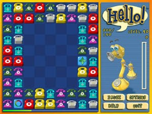
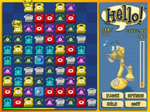

Hello!



Download Full Version Now!
Prepare yourself for the Easy and Instant Fun of the newest and coolest phone puzzle featuring four amazing game modes. Do you like fast-paced action? Choose among Tower, Bridge or Crazy modes.
For the "Think & Play" gamers, Hello! offers a very special game: Strategy. The challenges you face will be different depending on the game mode. New phones appear from time to time or after one play so be careful not to let them fill the screen! Our friend Ringo will help you by giving tips and warnings when you're in danger!
- Bridge Game: hyper action! Phones come from top and bottom. Hurry up and connect many phones! The game finishes when a phone from the top collides with a phone from the bottom.
- Crazy Game: ultra action! Phones come from all directions! Connect as many phones as you can and avoid them to fulfil the screen.
- Strategy: plan & play! After a play, a new line of phones come from the bottom. Think and plan each connection to eliminate many phones at once. The game finishes if a phone reaches the top of the screen.
- Tower Game: super action! Phones come from the bottom from time to time. Connect phones as quickly as you can and don't let them pile up to the top of the screen.
Features
Hello! offers great entertainment for the whole family!
- Play 160 different game levels in 4 amazing game modes
- Save your high scores
- Get tips from Ringo to succeed in the game!
- Play in fullscreen or windowed mode
- Original jazz soundtrack
- Take advantage of 9 super Power Ups that help you!
System Requirements
- Windows 95/98/ME/NT/2000/XP/Server 2003.
- DirectX 3.0 or superior.
- Pentium/AMD 133 MHz or superior.
- 32 Mb RAM (for Windows 95) for higher versions we recommend 64Mb or more.
- 10 Mb free disk space.